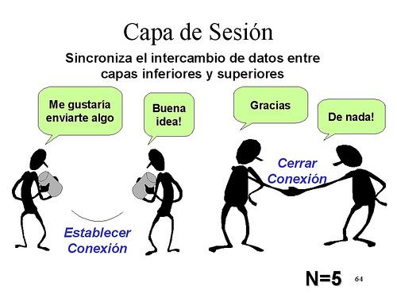

¿Qué es?
El nivel de sesión o capa de sesión es el quinto nivel del modelo OSI, que proporciona los mecanismos para controlar el diálogo entre las aplicaciones de los sistemas finales. En muchos casos, los servicios de la capa de sesión son parcialmente, o incluso, totalmente prescindibles. No obstante, en algunas aplicaciones su utilización es ineludible.
La capa de sesión proporciona los siguientes servicios:
- Control del Diálogo: Éste puede ser simultáneo en los dos sentidos (full-duplex) o alternado en ambos sentidos (half-duplex).
- Agrupamiento: El flujo de datos se puede marcar para definir grupos de datos.
- Recuperación: La capa de sesión puede proporcionar un procedimiento de puntos de comprobación, de forma que si ocurre algún tipo de fallo entre puntos de comprobación, la entidad de sesión puede retransmitir todos los datos desde el último punto de comprobación y no desde el principio.
Todas estas capacidades se podrían incorporar en las aplicaciones de la capa 7. Sin embargo, ya que todas estas herramientas para el control del diálogo son ampliamente aplicables, parece lógico organizarlas en una capa separada, denominada capa de sesión.
La capa de sesión surge como una forma de organizar y sincronizar el diálogo y controlar el intercambio de datos.
La capa de sesión permite a los usuarios de máquinas diferentes establecer sesiones entre ellos. Una sesión permite el transporte ordinario de datos, como lo hace la capa de transporte, pero también proporciona servicios mejorados que son útiles en algunas aplicaciones. Se podría usar una sesión para que el usuario se conecte a un sistema remoto de tiempo compartido o para transferir un archivo entre dos máquinas. 
protocolos
- Protocolo RPC (llamada a procedimiento remoto): es un protocolo que permite a un programa de ordenador ejecutar código en otra máquina remota sin tener que preocuparse por las comunicaciones entre ambos. El protocolo es un gran avance sobre los sockets usados hasta el momento. Las RPC son muy utilizadas dentro del paradigma cliente-servidor, siendo el cliente el que inicia el proceso solicitando al servidor que ejecute cierto procedimiento o función, y enviando de vuelta este último el resultado de dicha operación al cliente. Hoy en día se está utilizando el XML como lenguaje para definir el IDL y el HTTP como protocolo de red, dando lugar a lo que se conoce como servicios web.
El cliente hace la llamada al procedimiento remoto mediante un mensaje a través de la red, éste se detiene ya que es un proceso síncrono, es decir, necesita una respuesta del servidor para continuar su ejecución, en esta llamada se incluye un STUN (resguardo) el cual se encarga de ajustar parámetros y direcciones de memoria en un ambiente (cliente) u otro (servidor).
El servidor recibe la petición y desempaqueta el mensaje para extrar la información necesaria para realizar la tarea. El stub ayuda a que el servidor sea capaz de convertir parámetros de una representación a otra, para traducir direcciones de memoria de cliente a servidor.
- El servidor ejecuta la tarea.
- El servidor crea un mensaje de respuesta para el cliente en el que incluye el resultado de la tarea que este le pidió realizar
- El cliente recibe y desempaqueta el mensaje de respuesta del servidor, continúa con su ejecución normal. - STUB: El stub es la pieza de código que le permite al servidor ejecutar la tarea que se le asignó, se encarga de proveer la información necesaria para que el servidor convierta las direcciones de los parámetros que el cliente envió en direcciones de memoria válidas dentro del ambiente del servidor. La representación de datos entre el cliente y el servidor podría discrepar, el stub también provee la información necesaria para solucionar esta situación. De manera general, es la pieza de código que se encarga de enmascarar toda la discrepancia entre el cliente y servidor, es necesario que las bibliotecas stubs estén instaladas tanto en el cliente como en el servidor.
- SCP (Secure Copy): El protocolo SCP es básicamente idéntico al protocolo RCP, pero a diferencia de este, los datos son cifrados durante su transferencia, para evitar que potenciales sniffers extraigan información útil de los paquetes de datos. Sin embargo, el protocolo mismo no provee autenticación y seguridad; sino que espera que el protocolo subyacente, SSH, lo asegure.
- ASP (Protocolo de sesión APPLE TALK): Fue desarrollado por Apple Computer, ofreciendo establecimiento de la sesión, mantenimiento y desmontaje, así como la secuencia petición. ASP es un protocolo intermedio que se basa en la parte superior de AppleTalk Protocolo de Transacciones (ATP), que es el protocolo original y fiable a nivel de sesión de AppleTalk. Proporciona servicios básicos para solicitar respuestas a las arbitrarias órdenes y llevar a cabo fuera de la banda de consultas de estado. También permite al servidor enviar mensajes asíncronos de atención al cliente.